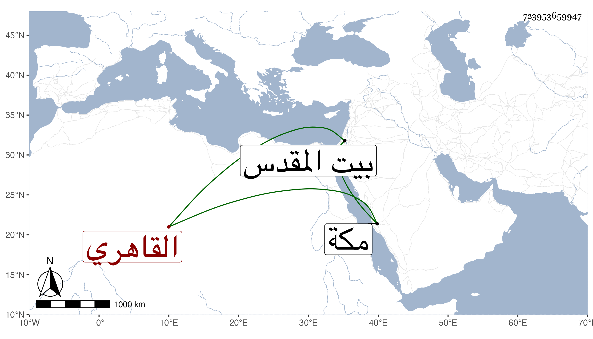

0902Sakhawi.DawLamic.ITO20230111-ara1.EIS1600.723953659947
Biography ID: 723953659947
505
أحمد بن الكمال محمد بن محمد بن عبد الرحمن بن علي بن يوسف بن منصور القاهري شقيق محمد وعبد الرحمن ويعرف كأبيه بابن إمام الكاملية قال إنه ولد في سنة أربع وأربعين وثمانمائة بالكاملية ونشأ في كنف أبويه مع النساء فقرأ بعض المنهاج وجميع الزبد واختلف عليه غير واحد من المعلمين وربما قرأ تفهما على أبي العزم الحلاوي والشمس المسيري ونحوهما ولم ينجب ولا كاد وسمع مع والده بقراءتي على عدة من الشيوخ وحج معه وجاور غير مرة وسمع هناك على التقي بن فهد وغيره كأبي الفتح المراغي وكذا زار بيت المقدس وسمع به بعضا على التقي القلقشندي ونحوه ولما مات أبوه تمشيخ بدون مقتضيها لكن لكون الفساق وثبوا له ولأخيه علي حتى اغتصبوا مني مشيخة الحديث بالكاملية بل تلطف معي السلطان في أمرها إكراما لخوند بسفارة بعض الطواشية وكذا لكونه عمل شيخ السبع الأصيلي وصار يتجوه على الضعفاء بالطواشي المتهم وربما حصل له أشياء وسلك شبه طريقة أبيه في عمل وقت في يوم عاشوراء يجمع له من الناس أموالا يدخر جلها وتباين مع أخيه عبد الرحمن لأسباب دنيوية وآل الأمر إلى النزول عن التدريس المشار إليه لابن النقيب وتعجب أهل الديانة من هذا الصنيع أولا وثانيا وكان بمكة مجاورا في سنة تسع وتسعين وزوجة أخيه هناك فلم يصلها بشيء ولا أظنه سأل عنها .
